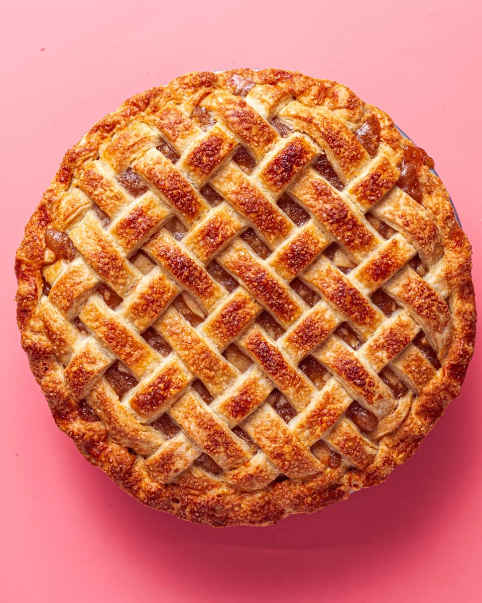

Apple Pie

Description
Apple pie is a classic dessert made with a flaky pastry crust and a sweet, spiced apple filling.
It's a beloved treat, especially during the fall season, and is often served warm with a scoop of vanilla ice cream or a dollop of whipped cream.
This recipe is simple to follow and yields a delicious, homemade apple pie that will impress your family and friends.
Ingredients
- 6-8 medium apples (peeled, cored, and sliced)
- 1/2 cup granulated sugar
- 1/4 cup brown sugar
- 1 teaspoon ground cinnamon
- 1/4 teaspoon ground nutmeg
- 1 tablespoon lemon juice
- 2 tablespoons all-purpose flour
- 1 package of pre-made pie crusts (or homemade crust)
- 1 tablespoon butter (optional, for dotting)
- 1 egg (for egg wash)
Steps
- Preheat your oven to 375°F (190°C).
- In a large bowl, combine the sliced apples, granulated sugar, brown sugar, cinnamon, nutmeg, lemon juice, and flour. Mix well to coat the apples evenly.
- Roll out one pie crust and place it into a 9-inch pie dish. Trim the edges if necessary.
- Pour the apple mixture into the pie crust, spreading it out evenly. Dot the filling with small pieces of butter if desired.
- Roll out the second pie crust and place it over the apples. You can create a lattice design or simply cover the pie and cut slits in the top to allow steam to escape.
- Seal the edges of the pie crusts together and crimp them with a fork or your fingers.
- Beat the egg in a small bowl and brush it over the top crust to give it a golden finish.
- Bake the pie in the preheated oven for 50-60 minutes, or until the crust is golden brown and the filling is bubbly.
- Remove the pie from the oven and let it cool for at least 2 hours before serving.
- Serve warm with vanilla ice cream or whipped cream, if desired. Enjoy!
Home Page